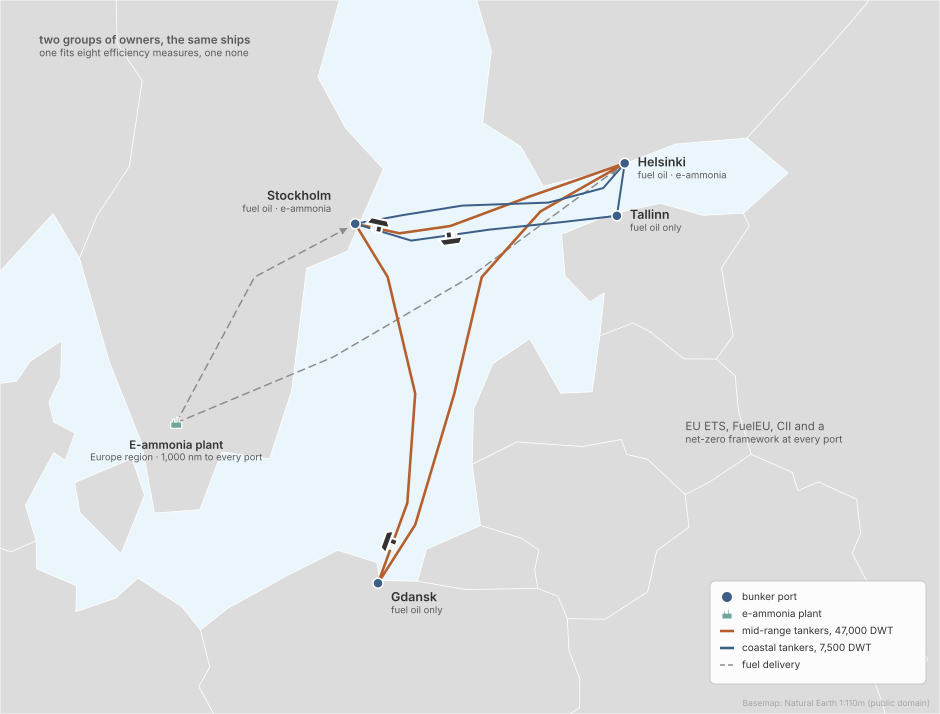
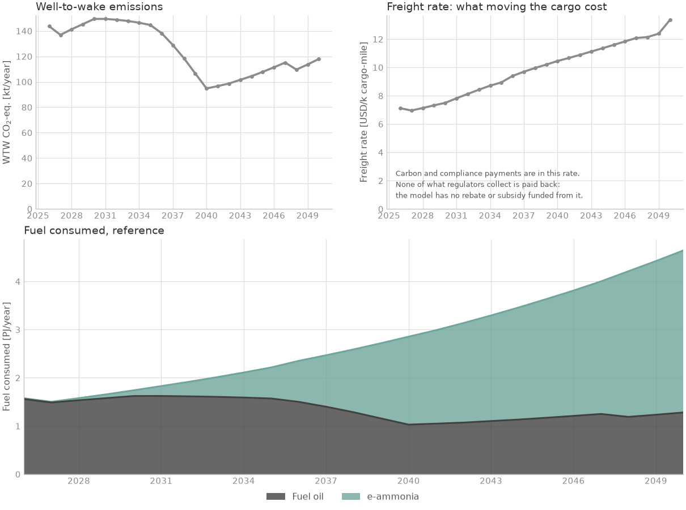
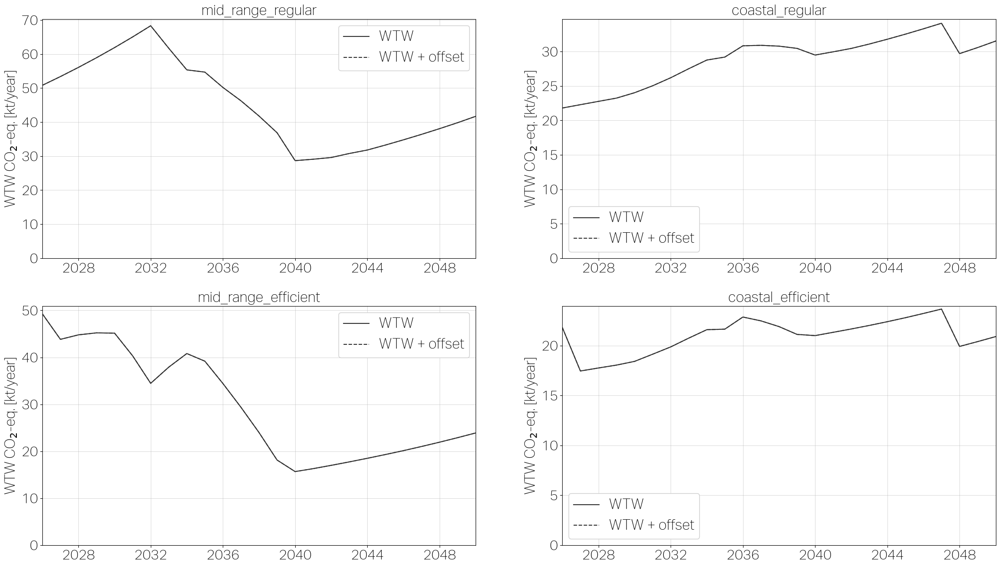

Two fleets in the Baltic#
Regional networks · deck simulations/examples/example_3/

How much do the owners’ efficiency choices matter on the same trade?
The case#

Ships: product tankers in the Baltic, in two fleets that are the same in everything but one choice. The regular owners fit no efficiency measure; the efficient owners can fit eight (air lubrication, rotor sails, hull paint, propeller devices and others). Each fleet starts with 2 MR tankers (~47,000 DWT) and 3 coastal tankers (~7,500 DWT): a handful of ships, not a market segment.
Routes: the MR tankers sail Helsinki, Stockholm and Gdansk; the coastal tankers Helsinki, Tallinn and Stockholm. Trade grows 5 % a year.
Fuels: fuel oil everywhere; e-ammonia from a European plant, bunkered at Helsinki and Stockholm only.
Policy: EU ETS and FuelEU on every port, CII, and a net-zero framework whose values are the deck’s own, not the data library’s.
Horizon: 2026 to 2050, yearly.
Results#

Both fleets together: e-ammonia is 72 % of the energy burnt in 2050.

Fleet by fleet: in 2050 the efficient MR tankers emit 24 kt CO2e against 42 kt for the regular ones, and the efficient coastal tankers 21 kt against 32 kt. Each panel has its own scale.
The deck#
# SPDX-FileCopyrightText: 2026 Fonden Mærsk Mc-Kinney Møller Center for Zero Carbon Shipping
# SPDX-License-Identifier: CC-BY-4.0
# ---------------------------------------------------------------------------------
# SETTING THE SCENE – EXAMPLE 3 (BALTIC PRODUCT TANKERS WITH E-AMMONIA AND
# ENERGY EFFICIENCIES)
#
# This example is based in Helsinki and is modeled through two operators with
# similar fleets. Each operates a mix of MR tankers (~47k DWT) and coastal
# tankers (~7.5k DWT) trading across the Baltic Sea, with regular voyages linking
# Helsinki, Stockholm, Tallinn, and Gdansk.
#
# Both operators can use conventional fossil fuel or transition to
# e-ammonia as an alternative. Fuel availability is assumed to be uneven:
# Helsinki and Stockholm provide both fossil fuels and e-ammonia, while Tallinn
# and Gdansk supply fossil fuels only.
#
# The distinction lies in their adoption of energy-efficiency (EE) measures. One
# operator (EE_fleet) implements a package of EE measures (such as hull and
# propeller improvements, weather routing, and alternative power devices), while
# the other (regular_fleet) does not. This setup allows for a direct comparison
# of the economic and emissions impact of efficiency retrofits, under otherwise
# identical conditions.
#
# Operating within the European regulatory zone, the fleets are subject to both
# IMO measures (CII and potential NZF) and EU regulations (FuelEU
# Maritime and the EU ETS). These frameworks create strong incentives for
# reducing emissions through both fuel switching and efficiency improvements.
#
# This scenario provides a reference case for analyzing the combined and
# comparative impacts of e-ammonia adoption and energy-efficiency measures on
# short-sea tanker economics in the Baltic. Users can adjust fleet composition,
# efficiency uptake, fuel costs, and regulatory assumptions in the .inc files to
# test sensitivities and policy outcomes.
#
# ---------------------------------------------------------------------------------
DEFINE {
# -------------------------- DEFINITIONS --------------------------
# Import the default model settings. These provide baseline constants
# and parameters that can be overwritten in this scenario.
Load DefaultModelDefinition
# ---------------------------- FLEET ------------------------------
# Defines the fleets of the two different operators, contaning multiple
# tankers and similar vessel types, but differentiation on the EE-measures.
Include "includes/regular_fleet_curves.inc"
Include "includes/regular_fleet.inc"
Include "includes/efficient_fleet_curves.inc"
Include "includes/efficient_fleet.inc"
# ----------------------------- ROUTE -----------------------------
# Defines the ports included in the scenario (Helsinki, Stockholm, Tallinn,
# Gdansk) along with their characteristics. The route file specifies the
# distribution of voyages, port calls, and time allocation between sea
# and port conditions.
Include "includes/route.inc"
Include "includes/ports.inc"
Include "includes/bunker_logistics.inc"
# ----------------------------- FUEL ------------------------------
# Defines the fuels available in the scenario, their production processes,
# feedstocks, costs, and emission factors. Regional differences and
# plants are also defined here.
Include "includes/fuel_production.inc"
Include "includes/regions.inc"
Include "includes/producer.inc"
Load DefaultEmission
# -------------------------- REGULATION ---------------------------
# Defines the relevant international regulatory frameworks affecting the
# fleet. As we operate within EU, both IMO and EU jurisdiction are in
# effect.
Include "includes/cii.inc"
Include "includes/eu_ets.inc"
Include "includes/fuel_eu.inc"
Include "includes/net_zero_framework.inc"
# ---------------- DECISION PROCESESS ---------------------------
Include "includes/decision_processes.inc"
# -------------------------- OUTPUT -----------------------------
Load DefaultPlot
}
EVENTS {
# time-steps
Load DefaultTimeStepYearly
}
# SPDX-FileCopyrightText: 2026 Fonden Mærsk Mc-Kinney Møller Center for Zero Carbon Shipping
# SPDX-License-Identifier: CC-BY-4.0
# ------------------------------ REGULAR FLEET --------------------------------
#
# This file defines the baseline Baltic tanker fleet without any additional
# energy-efficiency measures. The fleet includes both coastal tankers (~7,500
# DWT) and MR tankers (~47,000 DWT), operating between Helsinki, Stockholm,
# Tallinn, and Gdansk.
#
# Vessels can be modeled on conventional fossil fuels or on e-ammonia,
# allowing direct comparison of fuel transition costs and emissions. In this
# baseline version, no efficiency upgrades are applied, providing a reference
# case against which the EE fleet can be compared.
#
# -----------------------------------------------------------------------------
Copy Vessel "tanker_47k_dwt_ice_oil" "mid_range_regular_oil"
Copy Vessel "tanker_47k_dwt_ice_ammonia" "mid_range_regular_ammonia"
Copy Vessel "tanker_7500_dwt_ice_oil" "coastal_regular_oil"
Copy Vessel "tanker_7500_dwt_ice_ammonia" "coastal_regular_ammonia"
Fleet "mid_range_regular" {
Vessels = [Vessel("mid_range_regular_oil"), Vessel("mid_range_regular_ammonia")]
InitialVessels = 2
InitialSplit = [0.5, 0.5]
InitialAgeDistribution = [
Curve("age_dist_mid_range_regular_oil"),
Curve("age_dist_mid_range_regular_ammonia")
]
# Trade growth: annual growth rate of 5%, but can be changed if expected otherwise or disabled to keep constant.
TradeGrowth = 0.05
# disallow the approximation of technology uptake from other fleets
AllowTechnologyApproximation = FALSE
}
Fleet "coastal_regular" {
Vessels = [Vessel("coastal_regular_oil"), Vessel("coastal_regular_ammonia")]
InitialVessels = 3
InitialSplit = [1.0, 0.0]
InitialAgeDistribution = [
Curve("age_dist_coastal_regular_oil"),
0
]
# Trade growth: annual growth rate of 5%, but can be changed if expected otherwise or disabled to keep constant.
TradeGrowth = 0.05
# disallow the approximation of technology uptake from other fleets
AllowTechnologyApproximation = FALSE
}
# SPDX-FileCopyrightText: 2026 Fonden Mærsk Mc-Kinney Møller Center for Zero Carbon Shipping
# SPDX-License-Identifier: CC-BY-4.0
# ------------------------------- EE FLEET ------------------------------------
#
# This file defines the Baltic tanker fleet with energy-efficiency measures
# enabled. As with the regular fleet, it includes both coastal tankers (~7,500
# DWT) and MR tankers (~47,000 DWT), trading between Helsinki, Stockholm,
# Tallinn, and Gdansk.
#
# Vessels can operate on fossil fuels or adopt e-ammonia, and have
# similar specifications to those in the regular fleet.
#
# This efficient fleet, however, get energy efficiency measures enabled from the
# .inc file "energy_efficiencies".
#
# -----------------------------------------------------------------------------
Copy Vessel "tanker_47k_dwt_ice_oil" "mid_range_efficient_oil"
Copy Vessel "tanker_47k_dwt_ice_ammonia" "mid_range_efficient_ammonia"
Copy Vessel "tanker_7500_dwt_ice_oil" "coastal_efficient_oil"
Copy Vessel "tanker_7500_dwt_ice_ammonia" "coastal_efficient_ammonia"
Fleet "mid_range_efficient" {
Vessels = [Vessel("mid_range_efficient_oil"), Vessel("mid_range_efficient_ammonia")]
InitialVessels = 2
InitialSplit = [0.5, 0.5]
InitialAgeDistribution = [
Curve("age_dist_mid_range_efficient_oil"),
Curve("age_dist_mid_range_efficient_ammonia")
]
# Trade growth: annual growth rate of 5%, but can be changed if expected otherwise or disabled to keep constant.
TradeGrowth = 0.05
}
Fleet "coastal_efficient" {
Vessels = [Vessel("coastal_efficient_oil"), Vessel("coastal_efficient_ammonia")]
InitialVessels = 3
InitialSplit = [1.0, 0.0]
InitialAgeDistribution = [
Curve("age_dist_coastal_efficient_oil"),
0
]
# Trade growth: annual growth rate of 5%, but can be changed if expected otherwise or disabled to keep constant.
TradeGrowth = 0.05
}
Fleet "*_efficient" {
Technologies = [
Technology("air_lubrication_tanker_35k_dwt"),
Technology("cargo_systems_tanker_35k_dwt"),
Technology("exhaust_gas_boiler_ae_tanker_35k_dwt"),
Technology("flettner_rotor_tanker_35k_dwt"),
Technology("hull_painting_tanker_35k_dwt"),
Technology("lighting_system_tanker_35k_dwt"),
Technology("propeller_improvement_devices_tanker_35k_dwt"),
Technology("variable_frequency_drive_tanker_35k_dwt")
]
}
# SPDX-FileCopyrightText: 2026 Fonden Mærsk Mc-Kinney Møller Center for Zero Carbon Shipping
# SPDX-License-Identifier: CC-BY-4.0
# Curve definitions for initial age distributions and technology shares
Curve "age_dist_mid_range_regular_oil" {
Table = [
0 0
1 0
2 0
3 0
4 0
5 0
6 0
7 0
8 0
9 0
10 0
11 0
12 0
13 0
14 0
15 0
16 1
17 0
18 0
19 0
20 0
21 0
22 0
23 0
24 0
]
}
Curve "age_dist_mid_range_regular_ammonia" {
Table = [
0 1
1 0
2 0
3 0
4 0
5 0
6 0
7 0
8 0
9 0
10 0
11 0
12 0
13 0
14 0
15 0
16 0
17 0
18 0
19 0
20 0
21 0
22 0
23 0
24 0
]
}
Curve "age_dist_coastal_regular_oil" {
Table = [
0 0
1 0
2 0
3 0
4 0
5 0
6 0.333
7 0
8 0
9 0.333
10 0
11 0
12 0
13 0
14 0.333
15 0
16 0
17 0
18 0
19 0
20 0
21 0
22 0
23 0
24 0
]
}
# SPDX-FileCopyrightText: 2026 Fonden Mærsk Mc-Kinney Møller Center for Zero Carbon Shipping
# SPDX-License-Identifier: CC-BY-4.0
# Curve definitions for initial age distributions and technology shares
Curve "age_dist_mid_range_efficient_oil" {
Table = [
0 0
1 0
2 0
3 0
4 0
5 0
6 0
7 0
8 0
9 0
10 0
11 0
12 0
13 0
14 0
15 0
16 1
17 0
18 0
19 0
20 0
21 0
22 0
23 0
24 0
]
}
Curve "age_dist_mid_range_efficient_ammonia" {
Table = [
0 1
1 0
2 0
3 0
4 0
5 0
6 0
7 0
8 0
9 0
10 0
11 0
12 0
13 0
14 0
15 0
16 0
17 0
18 0
19 0
20 0
21 0
22 0
23 0
24 0
]
}
Curve "age_dist_coastal_efficient_oil" {
Table = [
0 0
1 0
2 0
3 0
4 0
5 0
6 0.333
7 0
8 0
9 0.333
10 0
11 0
12 0
13 0
14 0.333
15 0
16 0
17 0
18 0
19 0
20 0
21 0
22 0
23 0
24 0
]
}
# SPDX-FileCopyrightText: 2026 Fonden Mærsk Mc-Kinney Møller Center for Zero Carbon Shipping
# SPDX-License-Identifier: CC-BY-4.0
# ------------------------------ ROUTES ---------------------------------------
#
# This file defines the transport routes used in the Baltic tanker scenario.
# Two separate route structures are included, reflecting the different roles
# of the coastal tankers (~7.5k DWT) and the MR tankers (~47k DWT).
#
# The coastal tankers operate primarily on short-sea trades linking Helsinki,
# Tallinn, and Stockholm. These vessels are suited to frequent, shorter legs
# and to ports with more limited draft. Their operation emphasizes port time
# and short sailing intervals.
#
# The MR tankers connect Helsinki and Stockholm with Gdansk. These vessels
# handle larger parcels and cover longer legs across the Baltic, where they
# spend a greater fraction of time at sea. MR tankers are also the first to
# test the uptake of e-ammonia bunkering at major hubs.
#
# Separating the coastal and MR routes makes it possible to capture differences
# in operational profile, fuel consumption, and bunkering constraints while
# keeping both fleets within the same regional trade network.
#
# ----------------------------------------------------------------------------
Vessel "mid_range_*" {
Route = Route("mid_range_route")
}
Vessel "coastal_*" {
Route = Route("coastal_route")
}
# MR loop: Helsinki - Stockholm - Gdansk
# Longer legs, larger vessels, more time at sea
Route "mid_range_route" {
RouteType = REGIONAL_TRIP
Ports = [Port("helsinki"), Port("stockholm"), Port("gdansk")]
PortCalls = [12, 10, 14]
TimeAtSea = 0.55
Speeds = [12.8, 13.0, 12.5]
ConditionDistribution = [0.34, 0.28, 0.38]
}
# Coastal loop: Helsinki - Tallinn - Stockholm
# Short legs, frequent port calls, higher share of port time
Route "coastal_route" {
RouteType = REGIONAL_TRIP
Ports = [Port("helsinki"), Port("tallinn"), Port("stockholm")]
PortCalls = [14, 12, 10]
TimeAtSea = 0.40
Speeds = [11.5, 11.0, 11.2]
ConditionDistribution = [0.40, 0.30, 0.30]
}
# SPDX-FileCopyrightText: 2026 Fonden Mærsk Mc-Kinney Møller Center for Zero Carbon Shipping
# SPDX-License-Identifier: CC-BY-4.0
# ---------------------------- PORTS --------------------------------------------------
#
# This file defines the set of ports used in the Baltic tanker example:
# Helsinki, Stockholm, Tallinn, and Gdansk.
#
# Helsinki serves as the operators' base and a primary bunkering hub, where
# both fossil fuels and e-ammonia are assumed to be available.
# Stockholm is included as a secondary hub, also offering access to e-ammonia
# alongside fossil fuels.
#
# Tallinn and Gdansk represent ports where bunkering infrastructure is assumed
# to remain fossil-only, reflecting a slower uptake of e-ammonia outside the
# main hubs. This creates the need for careful bunkering logistics when
# operating across the network.
#
# Port definitions capture differences in fuel availability and handling costs.
# These assumptions are important for modeling the transition
# from fossil fuels to electro-fuels under combined IMO and EU regulatory
# frameworks, and for illustrating the challenges faced by a regional tanker
# operator in the Baltic.
#
# -------------------------------------------------------------------------------------
Port "helsinki" {
set_bunkering_allowed("ammonia_electro", TRUE)
}
Port "stockholm" {
set_bunkering_allowed("ammonia_electro", TRUE)
}
Port "tallinn" {
set_bunkering_allowed("ammonia_electro", FALSE)
}
Port "gdansk" {
set_bunkering_allowed("ammonia_electro", FALSE)
}
Port "*" {
set_bunkering_allowed("fossil_fuel_oil", TRUE)
# Here we overwrite to define the price and WTT of LSFO as we don't calculate it bottom up.
set_bunker_price_overwrite("fossil_fuel_oil", Forecast("fossil_fuel_oil_price_global"))
set_bunker_wtt_overwrite("fossil_fuel_oil", "carbon_dioxide", Forecast("fossil_fuel_oil_wtt_carbon_dioxide"))
set_handling_cost("fossil_fuel_oil", Variable("handling_cost_oil"))
set_handling_cost("ammonia_electro", Variable("handling_cost_ammonia"))
}
# Here you can change the handling cost of oil and ammonia
Variable "handling_cost_oil" {
Value = 8
}
Variable "handling_cost_ammonia" {
Value = 25
}
# SPDX-FileCopyrightText: 2026 Fonden Mærsk Mc-Kinney Møller Center for Zero Carbon Shipping
# SPDX-License-Identifier: CC-BY-4.0
# ---------------------- BUNKER LOGISTICS -------------------------------------
#
# This file defines the assumptions related to marine fuel supply and delivery
# across the ports used in the scenario.
#
# In this case, fossil fuel oil is treated as a liquid market fuel —
# widely available, with mature infrastructure and low delivery uncertainty.
#
# ----------------------------------------------------------------------------
BunkerLogistics {
LiquidMarketFuels = [Fuel("fossil_fuel_oil")]
set_distance("*", "*", 1000)
set_transport_cost("*", 0.1)
}
# SPDX-FileCopyrightText: 2026 Fonden Mærsk Mc-Kinney Møller Center for Zero Carbon Shipping
# SPDX-License-Identifier: CC-BY-4.0
# ------------------------------- FUEL PRODUCTION ---------------------------------
#
# This file defines the fuels and production pathways available in the Baltic
# tanker example. Conventional fuel oil is included as the fossil baseline, widely
# available at all major ports in the region. Alongside this, the example
# introduces electro-ammonia as a renewable alternative fuel.
#
# Electro-ammonia is assumed to be produced in Europe, using renewable
# electricity from the grid to power hydrogen electrolysis and nitrogen
# separation. The hydrogen and nitrogen are then combined via a Haber-Bosch
# process to synthesize ammonia. This reflects a likely future production
# pathway for low-carbon fuels in Northern Europe, supported by the expansion
# of wind and other renewable energy resources.
#
# By comparing fossil fuel with electro-ammonia, the example highlights both
# the technical feasibility and the cost/emissions trade-offs of adopting an
# electro-fuel in short-sea tanker operations in the Baltic.
#
# ---------------------------------------------------------------------------------
Import Fuel "fossil_fuel_oil"
# Electro-ammonia – renewable ammonia produced from hydrogen and nitrogen
Import Fuel "ammonia_electro"
# Production plant for electro-ammonia located in Europe
Import Plant "plant_ammonia_electro_alkaline"
Plant "plant_ammonia_electro_alkaline" {
Region = Region("europe")
Source = Source("renewable") # stand-alone renewable electricity production
# as default_plant.inc sets it for an e-fuel plant in Europe; without it, 0 %
CostOfCapital = Forecast("cost_of_capital_plant_electro_europe")
}
# Production processes for electro-ammonia (Haber-Bosch + supporting steps)
Import Process "electrolysis_stack_alkaline"
Import Process "ammonia_synthesis_electro_alkaline"
Import Process "hydrogen_electro_alkaline"
Import Process "nitrogen_air_separation"
Import Feedstock "demineralized_water"
# Electricity source definition
Import Source "renewable"
# SPDX-FileCopyrightText: 2026 Fonden Mærsk Mc-Kinney Møller Center for Zero Carbon Shipping
# SPDX-License-Identifier: CC-BY-4.0
# ------------------------------------ REGIONS -------------------------------------
#
# This file defines the geographic area of ammonia production, Europe.
#
# The specific region plays a role in the upstream (WTT) part of the fuel supply chain,
# affecting the overall cost and environmental impact of fuel production and delivery.
#
# These regional settings are used to calculate the lifecycle emissions and cost differences
# for fuels, depending on where they are produced and consumed.
#
# ----------------------------------------------------------------------------------
Region "europe" {
# set feedstock cost
set_feedstock_cost("demineralized_water", Forecast("demineralized_water_cost"))
# set energy source cost and emissions
set_source_opex("renewable", Forecast("electricity_cost_europe_mid"))
# e-hydrogen (alkaline)
set_process_capex("electrolysis_stack_alkaline", Timetable("electrolysis_stack_alkaline_capex"))
set_process_opex("electrolysis_stack_alkaline", Timetable("electrolysis_stack_alkaline_opex"))
set_process_energy("electrolysis_stack_alkaline", Forecast("electrolysis_stack_alkaline_energy"))
set_process_lifetime("electrolysis_stack_alkaline", Forecast("electrolysis_stack_alkaline_lifetime"))
set_process_replacement("electrolysis_stack_alkaline", Forecast("electrolysis_stack_alkaline_replacement"))
set_process_capex("hydrogen_electro_alkaline", Timetable("hydrogen_electro_alkaline_capex"))
set_process_opex("hydrogen_electro_alkaline", Timetable("hydrogen_electro_alkaline_opex"))
set_process_energy("hydrogen_electro_alkaline", Forecast("hydrogen_electro_alkaline_energy"))
set_process_lifetime("hydrogen_electro_alkaline", Forecast("hydrogen_electro_alkaline_lifetime"))
set_process_replacement("hydrogen_electro_alkaline", Forecast("hydrogen_electro_alkaline_replacement"))
# e-ammonia
set_process_capex("ammonia_synthesis_electro_*", Timetable("ammonia_synthesis_capex"))
set_process_opex("ammonia_synthesis_electro_*", Timetable("ammonia_synthesis_opex"))
set_process_energy("ammonia_synthesis_electro_*", Forecast("ammonia_synthesis_energy"))
}
# SPDX-FileCopyrightText: 2026 Fonden Mærsk Mc-Kinney Møller Center for Zero Carbon Shipping
# SPDX-License-Identifier: CC-BY-4.0
# ------------------------------ PRODUCER ----------------------------------------------
#
# This block defines the e-ammonia producer entity responsible for fuel supply. It is located
# in Europe. It links to a dedicated plant and is subject to regional capacity and development.
#
# -------------------------------------------------------------------------------------
Producer "epc_europe" {
Plants = [Plant("plant_ammonia_electro_alkaline")]
# define existing production capacity
InitialCapacity = [108]
# define the number of plants that can be built per year
MaximumDevelopment = 1
}
# SPDX-FileCopyrightText: 2026 Fonden Mærsk Mc-Kinney Møller Center for Zero Carbon Shipping
# SPDX-License-Identifier: CC-BY-4.0
# ------------------ CARBON INTENSITY INDICATOR ---------------------------
#
# Tracks compliance of international container ships with IMO’s CII rule
# based on CO₂ per transport work (TTW). Used here for monitoring only,
# with no effect on decision-making (remedial cost = 0).
#
# -----------------------------------------------------------------------
Regulation "cii" {
Measure = TRANSPORT_NOMINAL
Scheme = INDIVIDUAL
Scope = TTW
IncludeSlip = FALSE
Emissions = Emission("carbon_dioxide")
Fuels = Fuel("*")
Jurisdiction = [Port("helsinki"), Port("stockholm"), Port("gdansk"), Port("tallinn")]
# A remedial cost of zero means the regulation will have no influence on the decision making.
# The CII regulation is purely included to track the compliance with the regulation in the output.
RemedialCost = 0
# CII applies to all vessels in this scenario
set_include_vessel("*", TRUE)
# assign regulation specific emission factors according to MEPC308(73) for EEDI index
set_fuel_ttw("fossil_fuel_oil", "carbon_dioxide", 3.114) # based on HFO
set_fuel_ttw("ammonia_electro", "carbon_dioxide", 0.054)
set_vessel_threshold("coastal_*", Forecast("cii_target_coastal"))
set_vessel_threshold("mid_range_*", Forecast("cii_target_mid_range"))
}
Forecast "cii_target_reduction" {
Table = [
"01-01-2019" 1.0
"01-01-2020" 0.99
"01-01-2021" 0.98
"01-01-2022" 0.97
"01-01-2023" 0.95
"01-01-2024" 0.93
"01-01-2025" 0.91
"01-01-2026" 0.89
"01-01-2027" 0.87
"01-01-2028" 0.85
"01-01-2029" 0.83
"01-01-2030" 0.81
]
Extrapolate = FLAT
}
Copy Forecast "cii_target_reduction" "cii_target_coastal"
Copy Forecast "cii_target_reduction" "cii_target_mid_range"
Forecast "cii_target_coastal" {
Multiplier = 22.71
}
Forecast "cii_target_mid_range" {
Multiplier = 7.41
}
# SPDX-FileCopyrightText: 2026 Fonden Mærsk Mc-Kinney Møller Center for Zero Carbon Shipping
# SPDX-License-Identifier: CC-BY-4.0
# --------------------------------- EU ETS REGULATION -----------------------------------
#
# This regulation models the EU Emissions Trading System (ETS) as applied to shipping
# in the Baltic region. It covers CO₂, CH₄, and N₂O emissions from vessels operating
# within or entering Baltic ports.
#
# Voyages inside the Baltic Sea are fully covered, with emissions priced via forecasted
# carbon credit values.
#
# fossil fuel oil is treated as a conventional fossil marine fuel
# with full emissions liability under ETS.
#
# E-ammonia (electro-ammonia) is assumed to be zero-rated for CO₂, since it
# contains no carbon, but indirect N₂O emissions are included and priced using
# conservative emission factors.
#
# ---------------------------------------------------------------------------------------
Regulation "eu_ets" {
Measure = ABSOLUTE
Scheme = INDIVIDUAL
Scope = TTW
IncludeSlip = FALSE # accounted for through TTW methane emission factors
Emissions = [Emission("carbon_dioxide"), Emission("methane"), Emission("nitrous_oxide")]
Fuels = Fuel("*")
IntraFraction = 1
InterFraction = 0.5
ExtraFraction = 0
Jurisdiction = [Port("helsinki"), Port("stockholm"), Port("gdansk"), Port("tallinn")]
RemedialCost = <Forecast("eu_ets_carbon_credit_price") * Forecast("eu_ets_maritime_phase_in")>
set_vessel_threshold("*", 0.)
# EU ETS applies to both domestic and international vessels that enter or operate in the EU
set_include_vessel("*", TRUE)
# Global warming potentials
set_global_warming_potential("carbon_dioxide", 1)
set_global_warming_potential("methane", 28)
set_global_warming_potential("nitrous_oxide", 265)
# DEFAULT EMISSION FACTORS
# EU ETS emission factors are based on MRV Maritime Regulation Annex I.
# All bio and electro fuels are assumed to have a proven >65% reduction relative to LSFO and thus meet the
# criteria for "zero-rated" which means the fuel is classified with zero carbon dioxide emissions.
# Blue ammmonia is assumed to have a proven >70% reduction and thus be classed as a "low-carbon fuel" which
# also meets the crtieria for being "zero-rated" (RED Implemementing Regulation 2018/2066 Article 23c (c)).
# The "zero-rated" does not apply to methane and nitrous oxide which for bio and electro are all defined
# as TBM (to be measured) and for blue either TBM or N/A (not applicable). In this case they should use the
# "highest in class" value which for all fuels correspond to methane emissions of 0.00005 and nitrous oxide
# emissions of 0.00018.
# LSFO
set_fuel_ttw("fossil_fuel_oil", "carbon_dioxide", Variable("eu_default_diesel_carbon_dioxide"))
set_fuel_ttw("fossil_fuel_oil", "methane", <Variable("eu_default_diesel_ice_methane") * Forecast("eu_ets_ghg_phase_in")>)
set_fuel_ttw("fossil_fuel_oil", "nitrous_oxide", <Variable("eu_default_diesel_ice_nitrous_oxide") * Forecast("eu_ets_ghg_phase_in")>)
# e-ammonia
set_fuel_ttw("ammonia_electro", "carbon_dioxide", 0)
set_fuel_ttw("ammonia_electro", "methane", <Variable("eu_default_diesel_ice_methane") * Forecast("eu_ets_ghg_phase_in")>)
set_fuel_ttw("ammonia_electro", "nitrous_oxide", <Variable("eu_default_diesel_ice_nitrous_oxide") * Forecast("eu_ets_ghg_phase_in")>)
}
# SPDX-FileCopyrightText: 2026 Fonden Mærsk Mc-Kinney Møller Center for Zero Carbon Shipping
# SPDX-License-Identifier: CC-BY-4.0
# ---------------------------------- FUEL EU ---------------------------------------------
#
# This block represents the FuelEU Maritime regulation, which limits GHG intensity of fuels
# used in EU waters. It applies fully to the ships in the Baltics.
#
# The policy promotes low-emission fuels like bio-methanol and penalizes fossil fuels,
# helping simulate regulatory impact on fuel choice and compliance costs.
#
# ---------------------------------------------------------------------------------------
Regulation "fuel_eu" {
Measure = INTENSITY
Scheme = FLEXIBLE
Scope = WTW
IncludeSlip = FALSE # accounted for through TTW methane emission factors
Emissions = [Emission("carbon_dioxide"), Emission("methane"), Emission("nitrous_oxide")]
Fuels = Fuel("*")
IntraFraction = 1
InterFraction = 0.5
ExtraFraction = 0
Jurisdiction = [Port("helsinki"), Port("stockholm"), Port("gdansk"), Port("tallinn")]
RemedialCost = Variable("fuel_eu_remedial_cost")
SharedThreshold = Forecast("fuel_eu_target_reduction")
# FuelEU applies to both domestic and international vessels that enter or operate in the EU
set_include_vessel("*", TRUE)
# Global warming potentials
set_global_warming_potential("carbon_dioxide", 1)
set_global_warming_potential("methane", 25)
set_global_warming_potential("nitrous_oxide", 298)
# LSFO
set_fuel_wtt("fossil_fuel_oil", "*", 0) # this overwrites the Navigate calculation of WTT
set_fuel_wtt("fossil_fuel_oil", "carbon_dioxide", Variable("fuel_eu_default_wtt_fossil_fuel_oil"))
set_fuel_ttw("fossil_fuel_oil", "carbon_dioxide", Variable("eu_default_diesel_carbon_dioxide"))
set_fuel_ttw("fossil_fuel_oil", "methane", Variable("eu_default_diesel_ice_methane"))
set_fuel_ttw("fossil_fuel_oil", "nitrous_oxide", Variable("eu_default_diesel_ice_nitrous_oxide"))
# e-ammonia
# since e-fuels require certified actual values under FuelEU and has no WTT defaults, we use the dynamically calculated Navigate values
set_fuel_ttw("ammonia_electro", "carbon_dioxide", 0)
set_fuel_ttw("ammonia_electro", "methane", Variable("eu_default_diesel_ice_methane"))
set_fuel_ttw("ammonia_electro", "nitrous_oxide", Variable("eu_default_diesel_ice_nitrous_oxide"))
}
# SPDX-FileCopyrightText: 2026 Fonden Mærsk Mc-Kinney Møller Center for Zero Carbon Shipping
# SPDX-License-Identifier: CC-BY-4.0
# -------------------------- NET ZERO FRAMEWORK REGULATIONS --------------------------
#
# Implements an interpretation of the IMO Net Zero Framework (January 2026).
# Defines a well-to-wake (WTW) emissions intensity pathway aligned with net-zero goals.
# Applies across fuels and vessel types, with adjustable scope, jurisdiction, and coverage.
#
# -------------------------------------------------------------------------------------
Regulation "net_zero_framework" {
Measure = INTENSITY
Scheme = FLEXIBLE
Scope = WTW
IncludeSlip = TRUE
Emissions = Emission("*")
Fuels = Fuel("*")
Jurisdiction = [Port("helsinki"), Port("stockholm"), Port("gdansk"), Port("tallinn")]
RemedialCost = Forecast("net_zero_framework_remedial")
SharedThreshold = Forecast("net_zero_framework_z_values")
set_include_vessel("*", TRUE)
}
Forecast "net_zero_framework_z_values" {
Table = [
"01-01-2025" 1.00
"31-12-2027" 1.00
"01-01-2028" 0.96
"01-01-2029" 0.94
"01-01-2030" 0.92
"01-01-2031" 0.876
"01-01-2032" 0.832
"01-01-2033" 0.788
"01-01-2034" 0.744
"01-01-2035" 0.70
"01-01-2040" 0.35
"01-01-2050" 0.05
]
Multiplier = 93.3
Extrapolate = FLAT
}
# Here you can change the remedial cost
Forecast "net_zero_framework_remedial" {
Table = [
"01-01-2025" 0
"31-12-2027" 0
"01-01-2028" 1000
]
Extrapolate = FLAT
}
# SPDX-FileCopyrightText: 2026 Fonden Mærsk Mc-Kinney Møller Center for Zero Carbon Shipping
# SPDX-License-Identifier: CC-BY-4.0
# --------------------------- DECISION PROCESSES ----------------------------------
#
# This file defines how quickly the fleet and producers can adopt new fuels or technologies
# over time. These settings act as behavioral levers, influencing the model’s flexibility
# in switching between fuels or retrofitting ships.
#
# -----------------------------------------------------------------------------------
Fleet "*" {
# Decision sensitivities for newbuilds (odds ratios)
InterFuelSensitivity = 0.5 # Between fuel types: a 10% higher LCOT halves the odds
IntraFuelSensitivity = 0.5 # Within a single fuel type
TechnologySensitivity = 2 # Energy efficiency: a 5%-of-CAPEX NPV advantage doubles the odds
}
Producer "epc_europe" {
# Decision sensitivities for split between plants
FuelDemandSensitivity = 1.25 # Between fuel pathways: a 10% higher expected demand gives 1.25x the odds
FuelCostSensitivity = 0.5 # Within a pathway: a 10% higher LCoF halves the odds
}
Build it with an AI assistant#
The prompt below rebuilds this deck exactly: an assistant that saw only the prompt reproduced its results to the tonne. The deck’s own numbers are in it as the person’s numbers, marked GIVEN, so they are not a source. Session 5 shows how to use it.
Full prompt for this case
The study. Product tankers in the Baltic, 2026 to 2050, owned by two groups
of owners with the same ships on the same trades: mid-range tankers (47,000 DWT)
between Helsinki, Stockholm and Gdansk, and coastal tankers (7,500 DWT) between
Helsinki, Tallinn and Stockholm. The ships burn fuel oil or e-ammonia made in
Europe, which only Helsinki and Stockholm sell. One group fits eight efficiency
measures, the other none; both are under CII, a net-zero framework, the EU ETS
and FuelEU. The question is how much the efficiency measures change their fuel
and their emissions. This prompt rebuilds simulations/examples/example_3
exactly. The “Two fleets, one market” variant of the copper trade asks the same
question on one trade of your choice, with library numbers.
What comes from the library. The two tanker classes (oil and ammonia designs), the eight efficiency measures, the fuels and the fuel oil price, the e-ammonia plant and its processes, Europe’s electricity price, the EU ETS carbon price and phase-in, FuelEU’s target and penalty, and the EU default emission factors.
What is GIVEN. Everything else is example_3’s own: the fleet sizes and ages, the routes, the ports’ fuels and handling costs, the bunker delivery, the plant capacity, the CII and net-zero framework targets, and the decision sensitivities. The prompt gives them as the person’s numbers, so the assistant uses them as they are and marks them GIVEN. They exist nowhere in the library: treat any result as the example’s, not the Baltic’s.
Limits. A few ships per group (two mid-range and three coastal tankers each in 2026), so the results come in fractions of ships. Both tanker sizes fit the library’s measures for a 35,000 DWT tanker.
Tested: 2026-10-30, built cold on Sonnet and on Haiku: both decks ran with the same 48 warnings as example_3 (two unique, both expected) and reproduce it to the tonne, fleet by fleet. The plant then gained the library’s cost of capital (it was financed at 0 %); built cold again on Haiku, the prompt reproduces the new deck to the tonne: 143,662 t CO2e in 2026, 144,697 t in 2035 and 117,990 t in 2050, when e-ammonia is 72 % of the energy burnt. In 2050 the efficient group emits 45 kt against 73 kt for the regular one.
You are helping me build a simulation study for Navigate, the shipping
decarbonisation model. Write the files yourself; do not only
describe them.
Before writing anything, find the Navigate repository on my machine (a folder
usually named navigate-zcs; ask me where it is if you cannot find it), then read
docs/workshop/building-a-deck.md in it and follow it. It
says how Navigate works, how to run a deck and read its results, and the rules
every deck follows. This prompt gives the case.
THE DECK
A new folder, simulations/user/baltic_tankers/, holding one deck,
baltic_tankers.nav, with its files in includes/.
THE CASE
Product tankers in the Baltic, 2026 to 2050, yearly steps. Two groups of
owners run the same ships on the same trades: one group fits eight efficiency
measures, the other fits none. The question: how much do the efficiency
measures change their fuel and their emissions?
MY NUMBERS
Every number in this prompt is mine: GIVEN. Use each one exactly as written,
mark it GIVEN where it appears, and list them in the .nav header. The fleets are
a few ships on purpose. You should not need to invent anything; if you would
have to, the prompt is missing something: say what. Everything else comes from
the library, by the names below.
THE .NAV FILE
DEFINE, in this order: Load DefaultModelDefinition; Include
regular_fleet_curves.inc, regular_fleet.inc, efficient_fleet_curves.inc,
efficient_fleet.inc, route.inc, ports.inc, bunker_logistics.inc,
fuel_production.inc, regions.inc, producer.inc; Load DefaultEmission; Include
cii.inc, eu_ets.inc, fuel_eu.inc, net_zero_framework.inc,
decision_processes.inc; Load DefaultPlot. EVENTS: Load DefaultTimeStepYearly.
Load no other module (no DefaultRegulation, DefaultBunkerLogistics,
DefaultCalibration or DefaultConverterAvailable). For the numbers below you may
add Load DefaultReport and a Report node of your own in includes/report.inc,
included last: they change no result.
FLEETS
Four Fleet nodes that you declare yourself; do not Import or Copy the library's
Fleet files (so no fuel conversion costs and no initial technology shares).
Vessels are Copy Vessel of the library's:
- tanker_47k_dwt_ice_oil to mid_range_regular_oil and mid_range_efficient_oil
- tanker_47k_dwt_ice_ammonia to mid_range_regular_ammonia and
mid_range_efficient_ammonia
- tanker_7500_dwt_ice_oil to coastal_regular_oil and coastal_efficient_oil
- tanker_7500_dwt_ice_ammonia to coastal_regular_ammonia and
coastal_efficient_ammonia
| Fleet | Vessels | InitialVessels | InitialSplit | InitialAgeDistribution |
|---|---|---|---|---|
| mid_range_regular | mid_range_regular_oil, _ammonia | 2 | [0.5, 0.5] | Curve age_dist_mid_range_regular_oil, Curve age_dist_mid_range_regular_ammonia |
| coastal_regular | coastal_regular_oil, _ammonia | 3 | [1.0, 0.0] | Curve age_dist_coastal_regular_oil, 0 |
| mid_range_efficient | mid_range_efficient_oil, _ammonia | 2 | [0.5, 0.5] | Curve age_dist_mid_range_efficient_oil, Curve age_dist_mid_range_efficient_ammonia |
| coastal_efficient | coastal_efficient_oil, _ammonia | 3 | [1.0, 0.0] | Curve age_dist_coastal_efficient_oil, 0 |
- All four: TradeGrowth = 0.05.
- The two regular fleets also: AllowTechnologyApproximation = FALSE. The
efficient fleets do not set it.
- Age curves, in <fleet>_curves.inc, each a Table of ages 0 to 24 with 0 at
every age not named: the mid_range ..._oil curves 1 at age 16; the mid_range
..._ammonia curves 1 at age 0; the coastal ..._oil curves 0.333 at ages 6, 9
and 14. The regular and efficient files are the same apart from the names.
- In efficient_fleet.inc, after the two fleets, one block Fleet "*_efficient"
with Technologies = the library's air_lubrication_tanker_35k_dwt,
cargo_systems_tanker_35k_dwt, exhaust_gas_boiler_ae_tanker_35k_dwt,
flettner_rotor_tanker_35k_dwt, hull_painting_tanker_35k_dwt,
lighting_system_tanker_35k_dwt, propeller_improvement_devices_tanker_35k_dwt,
variable_frequency_drive_tanker_35k_dwt (as Technology("...")). The regular
fleets have no Technologies.
ROUTES (route.inc)
Vessel "mid_range_*" takes Route("mid_range_route"); Vessel "coastal_*" takes
Route("coastal_route"). Both are REGIONAL_TRIP:
- mid_range_route: Ports helsinki, stockholm, gdansk; PortCalls [12, 10, 14];
TimeAtSea 0.55; Speeds [12.8, 13.0, 12.5]; ConditionDistribution
[0.34, 0.28, 0.38]
- coastal_route: Ports helsinki, tallinn, stockholm; PortCalls [14, 12, 10];
TimeAtSea 0.40; Speeds [11.5, 11.0, 11.2]; ConditionDistribution
[0.40, 0.30, 0.30]
No set_voyage_distribution: the work is split equally between port pairs.
PORTS (ports.inc)
Declare Port helsinki, stockholm, tallinn and gdansk. ammonia_electro may be
bunkered at helsinki and stockholm, not at tallinn and gdansk. Then a Port "*"
block: fossil_fuel_oil may be bunkered everywhere, its bunker price overwritten
by Forecast fossil_fuel_oil_price_global and its carbon_dioxide well-to-tank by
Forecast fossil_fuel_oil_wtt_carbon_dioxide (set_bunker_price_overwrite,
set_bunker_wtt_overwrite); handling cost Variable handling_cost_oil = 8 for
fossil_fuel_oil and Variable handling_cost_ammonia = 25 for ammonia_electro.
BUNKER LOGISTICS (bunker_logistics.inc)
LiquidMarketFuels = fossil_fuel_oil; set_distance("*", "*", 1000);
set_transport_cost("*", 0.1).
FUEL (fuel_production.inc, regions.inc, producer.inc)
- Import Fuel fossil_fuel_oil and ammonia_electro; Import Plant
plant_ammonia_electro_alkaline, then a Plant block for it with
Region = Region("europe"), Source = Source("renewable") and CostOfCapital =
Forecast("cost_of_capital_plant_electro_europe"). Import Process electrolysis_stack_alkaline,
ammonia_synthesis_electro_alkaline, hydrogen_electro_alkaline and
nitrogen_air_separation; Import Feedstock demineralized_water; Import Source
renewable.
- Region "europe", declared (not imported), with exactly these lines:
feedstock cost of demineralized_water = Forecast demineralized_water_cost;
source opex of renewable = Forecast electricity_cost_europe_mid; for
electrolysis_stack_alkaline and for hydrogen_electro_alkaline, process capex
and opex = Timetables <process>_capex and <process>_opex, and process energy,
lifetime and replacement = Forecasts <process>_energy, _lifetime and
_replacement; for "ammonia_synthesis_electro_*", process capex and opex =
Timetables ammonia_synthesis_capex and ammonia_synthesis_opex, and process
energy = Forecast ammonia_synthesis_energy.
- Producer epc_europe: Plants = plant_ammonia_electro_alkaline,
InitialCapacity = [108], MaximumDevelopment = 1. No feedstock limits.
POLICY
All four regulations: Fuels all, Jurisdiction [helsinki, stockholm, gdansk,
tallinn], set_include_vessel("*", TRUE).
- cii.inc, Regulation cii: Measure TRANSPORT_NOMINAL, Scheme INDIVIDUAL, Scope
TTW, IncludeSlip FALSE, Emissions carbon_dioxide, RemedialCost 0; fuel TTW
carbon_dioxide 3.114 for fossil_fuel_oil and 0.054 for ammonia_electro;
vessel threshold Forecast cii_target_coastal for "coastal_*" and
cii_target_mid_range for "mid_range_*". Forecast cii_target_reduction:
2019 1.0, 2020 0.99, 2021 0.98, 2022 0.97, 2023 0.95, 2024 0.93, 2025 0.91,
2026 0.89, 2027 0.87, 2028 0.85, 2029 0.83, 2030 0.81 (each on 01-01),
Extrapolate FLAT. Copy Forecast it to cii_target_coastal (Multiplier 22.71)
and to cii_target_mid_range (Multiplier 7.41).
- eu_ets.inc, Regulation eu_ets, declared (not the library's): Measure ABSOLUTE,
Scheme INDIVIDUAL, Scope TTW, IncludeSlip FALSE, Emissions carbon_dioxide,
methane, nitrous_oxide; IntraFraction 1, InterFraction 0.5, ExtraFraction 0;
RemedialCost = Forecast eu_ets_carbon_credit_price x Forecast
eu_ets_maritime_phase_in; vessel threshold 0 for "*"; global warming
potentials 1, 28, 265. Fuel TTW: fossil_fuel_oil carbon_dioxide = Variable
eu_default_diesel_carbon_dioxide; for both fossil_fuel_oil and
ammonia_electro, methane = Variable eu_default_diesel_ice_methane x Forecast
eu_ets_ghg_phase_in and nitrous_oxide = Variable
eu_default_diesel_ice_nitrous_oxide x Forecast eu_ets_ghg_phase_in;
ammonia_electro carbon_dioxide 0.
- fuel_eu.inc, Regulation fuel_eu, declared (not the library's): Measure
INTENSITY, Scheme FLEXIBLE, Scope WTW, IncludeSlip FALSE, Emissions
carbon_dioxide, methane, nitrous_oxide; IntraFraction 1, InterFraction 0.5,
ExtraFraction 0; RemedialCost = Variable fuel_eu_remedial_cost;
SharedThreshold = Forecast fuel_eu_target_reduction; global warming
potentials 1, 25, 298. fossil_fuel_oil: well-to-tank "*" set to 0, then
carbon_dioxide = Variable fuel_eu_default_wtt_fossil_fuel_oil; TTW
carbon_dioxide, methane, nitrous_oxide = Variables
eu_default_diesel_carbon_dioxide, eu_default_diesel_ice_methane,
eu_default_diesel_ice_nitrous_oxide. ammonia_electro: TTW carbon_dioxide 0,
methane and nitrous_oxide the same two Variables.
- net_zero_framework.inc, Regulation net_zero_framework: Measure INTENSITY,
Scheme FLEXIBLE, Scope WTW, IncludeSlip TRUE, Emissions all; RemedialCost =
Forecast net_zero_framework_remedial; SharedThreshold = Forecast
net_zero_framework_z_values. Forecast net_zero_framework_z_values, Multiplier
93.3, Extrapolate FLAT: 01-01-2025 1.00, 31-12-2027 1.00, 01-01-2028 0.96,
01-01-2029 0.94, 01-01-2030 0.92, 01-01-2031 0.876, 01-01-2032 0.832,
01-01-2033 0.788, 01-01-2034 0.744, 01-01-2035 0.70, 01-01-2040 0.35,
01-01-2050 0.05. Forecast net_zero_framework_remedial, Extrapolate FLAT:
01-01-2025 0, 31-12-2027 0, 01-01-2028 1000.
DECISIONS (decision_processes.inc)
Fleet "*": InterFuelSensitivity 0.5, IntraFuelSensitivity 0.5,
TechnologySensitivity 2. Producer epc_europe: FuelDemandSensitivity 1.25,
FuelCostSensitivity 0.5.
BEFORE YOU TELL ME IT WORKS
Run the deck and report on it as building-a-deck.md says: exit code, and the
warnings and errors from the Log summary. Then give me, for 2026, 2035 and 2050:
- well-to-wake emissions (TotalEquivalentWTW) of each of the four fleets, of
each group of owners (regular, efficient) and of all four together;
- the energy consumed by fuel, all fleets together;
- the ships of each vessel in 2050.
Say plainly what the efficiency measures changed, for the mid-range and for the
coastal tankers.
The same question on one trade of your choice, with library numbers, is the variant Two fleets, one market of the trade route from Chile to Rotterdam.
Run it yourself#
In Colab: the explore notebook runs the deck and lets you move one lever. On your machine, from the repository root:
python -m navigate simulations/examples/example_3/example_3.nav -d ./assumptions
To install Navigate, follow the installation steps in the README, or the more detailed Getting started tutorial.